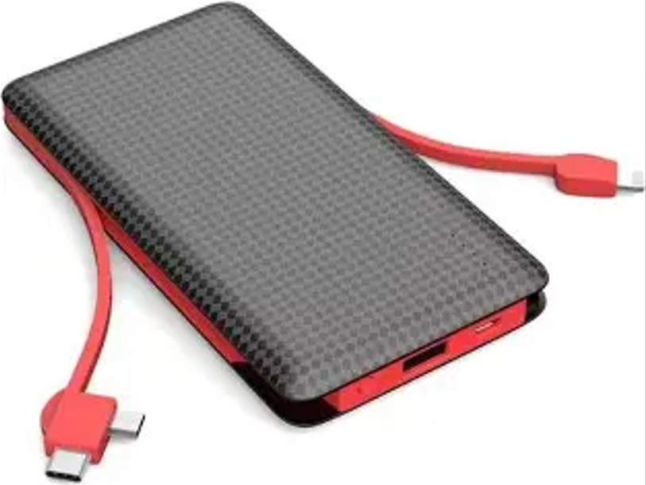

PowerBank
Um power bank (ou bateria portátil) é um dispositivo que armazena energia elétrica
para carregar
aparelhos eletrônicos em qualquer lugar, sem precisar de uma tomada. Veja nas próximas paginas mais informações sobre ele.

Lucas e Victor 2026 © Todos os direitos reservados
Trabalho acadêmico sem fins lucrativos.